Peran yang dibahas dalam panduan ini: Area Sales Supervisor (Peran lain — Distributor Manager, Admin RSA, Account Receivable — memiliki antarmuka berbasis upload-massal yang berbeda dan didokumentasikan secara terpisah.)
Dibuat secara otomatis dari penjelajahan screenshot aplikasi
(docs_crawler.py, Playwright) dengan login menggunakan akun budi /
Area Sales Supervisor. Screenshot tersimpan di folder /screenshots.
🇬🇧 English version: User_Guide.html / User_Guide.md
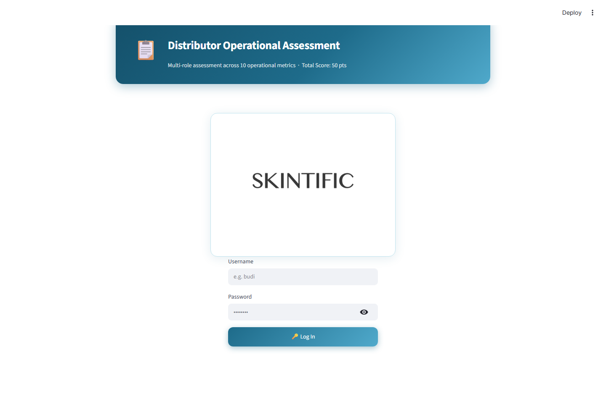
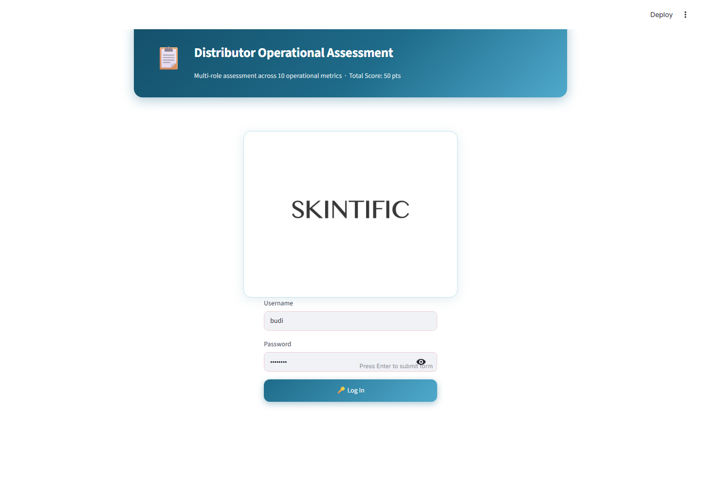
Tujuan: Melakukan autentikasi dan otomatis mengarahkan pengguna ke antarmuka sesuai perannya — tidak ada pemilihan peran secara manual; akun Anda yang menentukan tampilan yang akan muncul.
Kolom isian: - Username — nama login yang sudah didaftarkan (tidak case-sensitive, huruf besar/kecil tidak masalah) - Password — password akun Anda
Tombol: - 🔑 Log In — mengirimkan kredensial. Jika berhasil, halaman akan reload menuju dashboard sesuai peran Anda. Jika gagal, akan muncul pesan "❌ Invalid username or password." di bawah form tanpa menyebutkan kolom mana yang salah.
Aturan validasi:
- Perbandingan username tidak case-sensitive (Budi, budi, BUDI
semuanya akan cocok ke akun yang sama).
- Tidak ada batasan lockout/percobaan ulang — tidak ada rate limiting
untuk percobaan login.
Aksi umum pengguna: Ketik username dan password, klik Log In. Jika lupa password, lihat Bagian 10 — Ganti Password (memerlukan password lama Anda) atau hubungi Admin untuk reset password melalui panel Create User milik Distributor Manager.
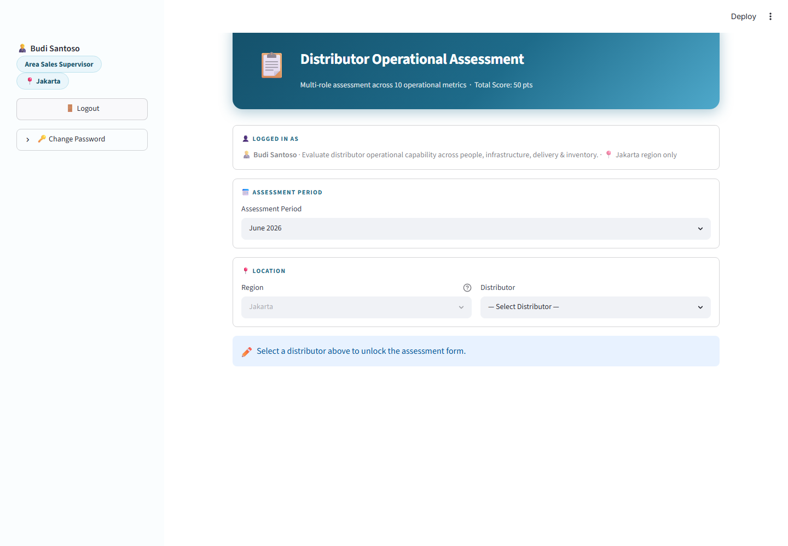
Tujuan: Mengonfirmasi identitas dan ruang lingkup peran/region Anda, sebelum form assessment dibuka.
Yang ditampilkan: - Sidebar: nama Anda, label peran, label region, tombol Logout, panel Change Password - Kartu "Logged In As": nama, deskripsi peran, dan ruang lingkup region - Kartu "Assessment Period": pemilih bulan/tahun - Kartu "Location": Region (terkunci sesuai region yang ditugaskan ke Anda) + Distributor (wajib dipilih)
Aturan validasi: - Form assessment di bawah tetap tersembunyi sampai sebuah Distributor dipilih. Region tidak dapat diubah — akun Area Sales Supervisor hanya ditugaskan untuk satu region tertentu.
Aksi umum pengguna: Pilih Assessment Period, lalu pilih Distributor untuk membuka form.
Tujuan: Memilih bulan yang menjadi acuan assessment.
Perilaku filter: - Area Sales Supervisor hanya bisa melihat 3 bulan: bulan ini dan 2 bulan sebelumnya. (Peran lain — peran bulk/admin — melihat jendela yang lebih luas, 13 bulan: 6 bulan ke belakang sampai 6 bulan ke depan.) Ini disengaja: assessment lapangan diharapkan diisi tepat waktu, bukan jauh-jauh hari sebelumnya atau lama setelah kejadian. - Default-nya adalah bulan berjalan saat halaman dibuka.
Aksi umum pengguna: Buka dropdown, pilih bulan. Mengubah periode setelah Anda mulai mengisi form tidak akan menghapus jawaban yang sudah diisi, tapi mengubah periode setelah submission untuk satu periode akan memungkinkan Anda memulai submission baru untuk periode lain (hanya satu submission diperbolehkan per peran+distributor+periode — lihat Bagian 8).
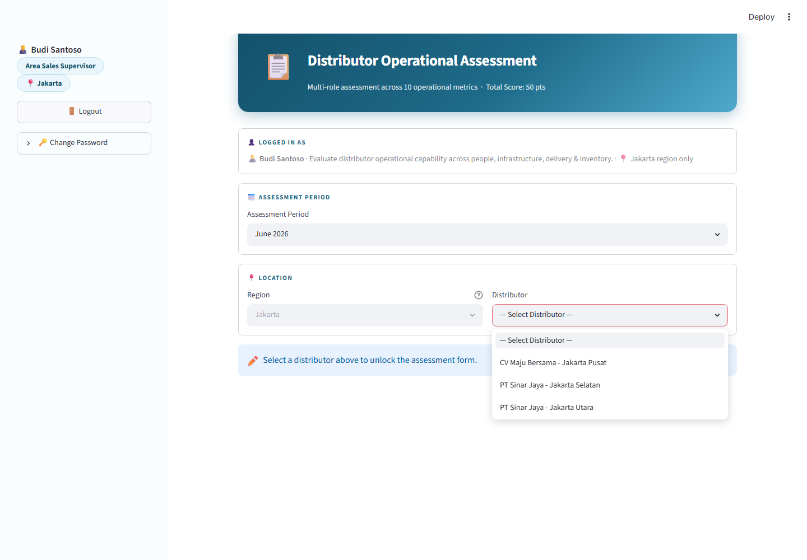
Tujuan: Memilih distributor yang akan diases.
Perilaku filter: - Daftar hanya menampilkan distributor yang ditugaskan khusus untuk Anda (dicocokkan pada master distributor berdasarkan region dan nama Anda sebagai supervisor yang bertanggung jawab) — bukan semua distributor di region Anda. - Jika daftar kosong, berarti belum ada distributor yang ditugaskan ke Anda; hubungi Admin.
Aturan validasi: Assessment Period dan Distributor harus diisi sebelum form di bawah muncul — akan tampil banner "✏️ Select a distributor above to unlock the assessment form" sampai keduanya diisi.
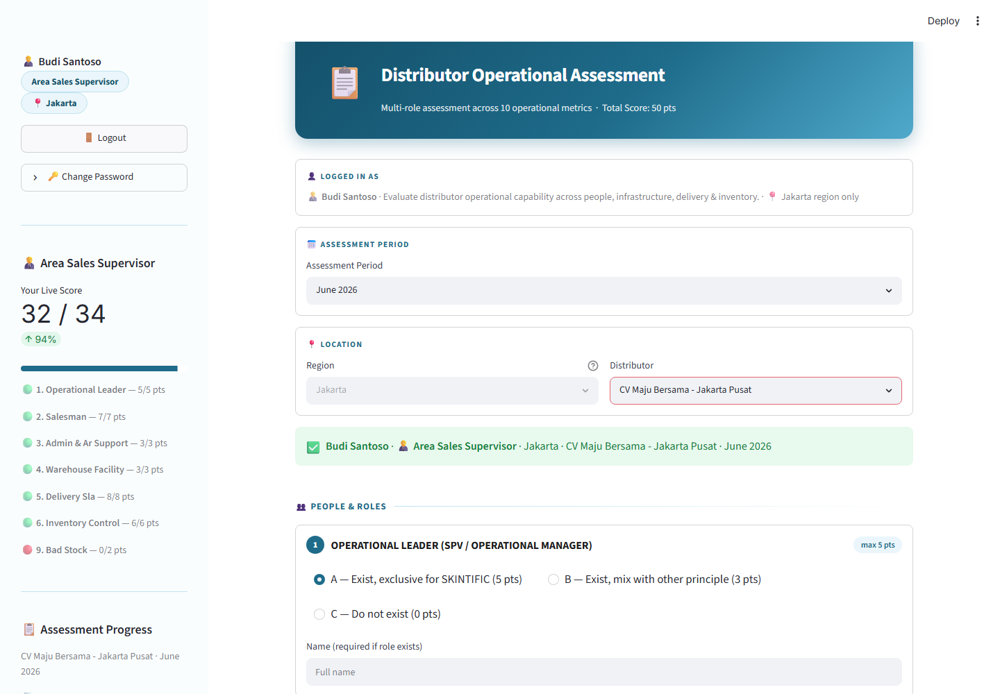
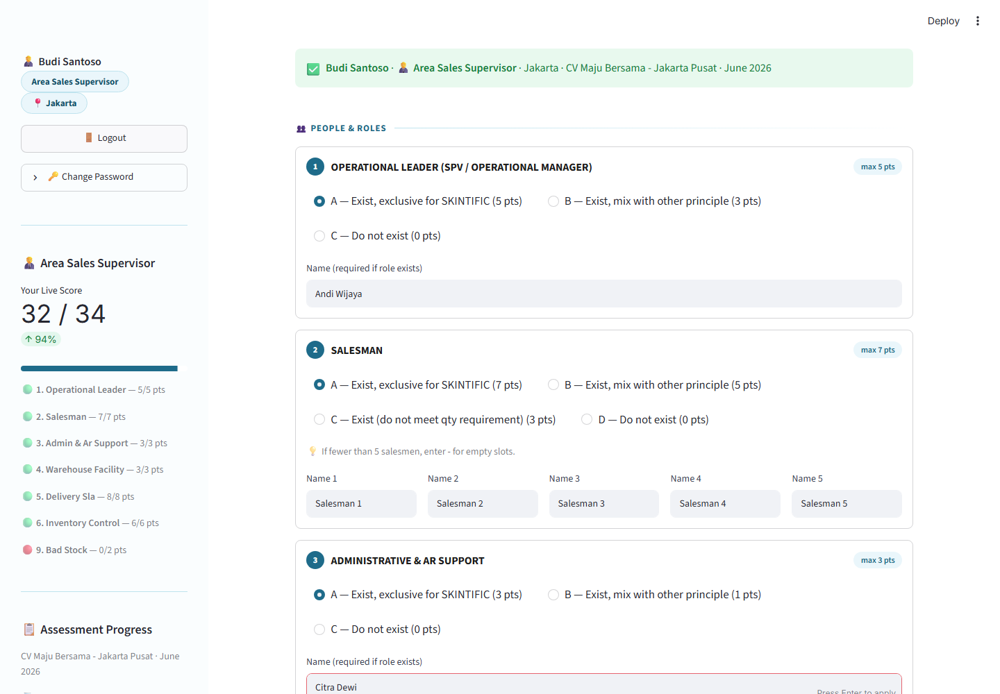
Tujuan: Kategori metrik pertama dari 3 kategori. Menilai apakah distributor memiliki staf khusus (exclusive untuk SKINTIFIC) di 3 peran berikut.
Kartu pada kategori ini: | # | Metrik | Poin Maksimal | Grade | |---|---|---|---| | 1 | Operational Leader (SPV/Operational Manager) | 5 | A=Exclusive(5), B=Mixed(3), C=Tidak ada(0) | | 2 | Salesman | 7 | A=Exclusive(7), B=Mixed(5), C=Di bawah kuota(3), D=Tidak ada(0) | | 3 | Administrative & AR Support | 3 | A=Exclusive(3), B=Mixed(1), C=Tidak ada(0) |
Tombol/input:
- Radio button (A/B/C/D) untuk memilih grade setiap metrik
- Kolom nama — wajib diisi jika grade yang dipilih menunjukkan peran
tersebut ada; Salesman wajib diisi tepat 5 nama (gunakan - untuk
slot yang tidak terisi jika kurang dari 5 salesman)
Aturan validasi:
- Jika grade = "Do not exist" (tidak ada), nama yang sudah diisi akan
ditolak ("selected 'Do not exist' but a name was entered")
- Jika grade ≠ "Do not exist", nama wajib diisi
- Salesman secara khusus wajib memiliki tepat 5 entri nama (nama asli
atau placeholder -), tidak boleh lebih atau kurang
Kalkulasi yang ditampilkan: Belum ada di tahap ini — poin dihitung secara live di sidebar (lihat Bagian 7).
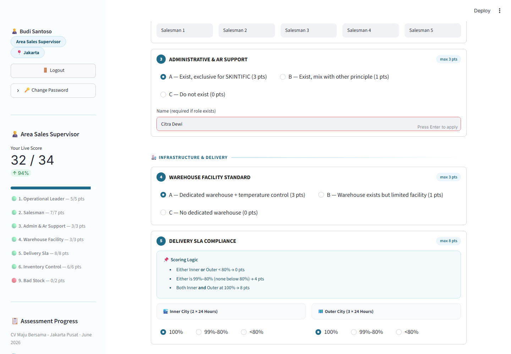
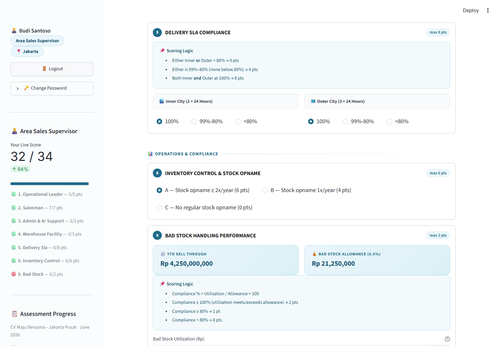
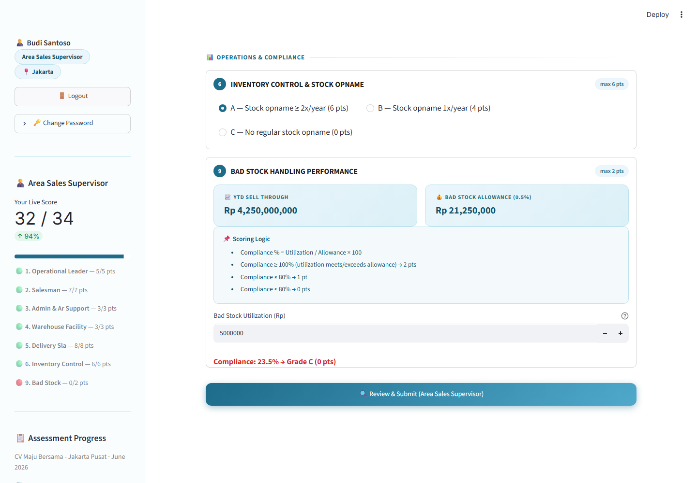
Tujuan: 4 metrik tersisa yang menjadi tanggung jawab Area Sales Supervisor.
| # | Metrik | Poin Maksimal | Catatan |
|---|---|---|---|
| 4 | Warehouse Facility Standard | 3 | Pilih grade langsung |
| 5 | Delivery SLA Compliance | 8 | Dihitung otomatis, lihat di bawah |
| 6 | Inventory Control & Stock Opname | 6 | Pilih grade langsung |
| 9 | Bad Stock Handling Performance | 2 | Dihitung otomatis, lihat di bawah |
Dua input radio terpisah (Inner City 2×24 jam, Outer City 3×24 jam), masing-masing 100% / 99%-80% / <80%. Grade dihitung otomatis, bukan dipilih langsung: - Inner ATAU Outer di bawah 80% → 0 pts - Salah satu di 99%-80% (tidak ada yang di bawah 80%) → 4 pts - Inner DAN Outer di 100% → 8 pts
Aturan validasi (penting): Jika distributor memiliki YTD sell through nol atau tidak ada datanya, seluruh kartu ini akan disembunyikan dan metrik ini otomatis mendapat skor maksimal (2 pts) — karena tidak ada data untuk dibandingkan, jadi tidak ada input yang ditampilkan dan tidak ada error yang muncul.
Aksi umum pengguna: Pilih grade langsung untuk Warehouse dan Inventory; untuk Delivery SLA, pilih band inner/outer; untuk Bad Stock, isi nominal Rupiah utilization dan lihat compliance % serta grade ter-update secara live.
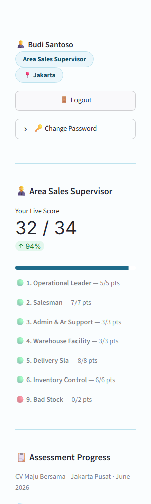
Tujuan: Memberikan feedback skor secara real-time saat Anda mengisi form, sekaligus visibilitas progress 3 peran lain untuk distributor+periode yang sama.
Yang ditampilkan: - "Your Live Score" — total berjalan dari maksimal 34 (maksimal 7 metrik milik Area Sales Supervisor), ter-update setiap ada perubahan jawaban, dilengkapi progress bar - Rincian per metrik dengan titik warna: 🟢 nilai penuh, 🟡 sebagian, 🔴 nol - "Assessment Progress" — semua 10 metrik dari 4 peran untuk distributor+periode ini: ✅ selesai (dengan poin + peran mana yang submit) atau ⏳ belum (dengan peran mana yang bertanggung jawab) - "Combined Score So Far" — dari maksimal 50, gabungan dari peran yang sudah submit
Kalkulasi yang ditampilkan: Ini hanya cermin live dari aturan scoring yang sama seperti dijelaskan di Bagian 5–6 — tidak ada kalkulasi baru di sini, hanya total berjalan dari jawaban di atas.
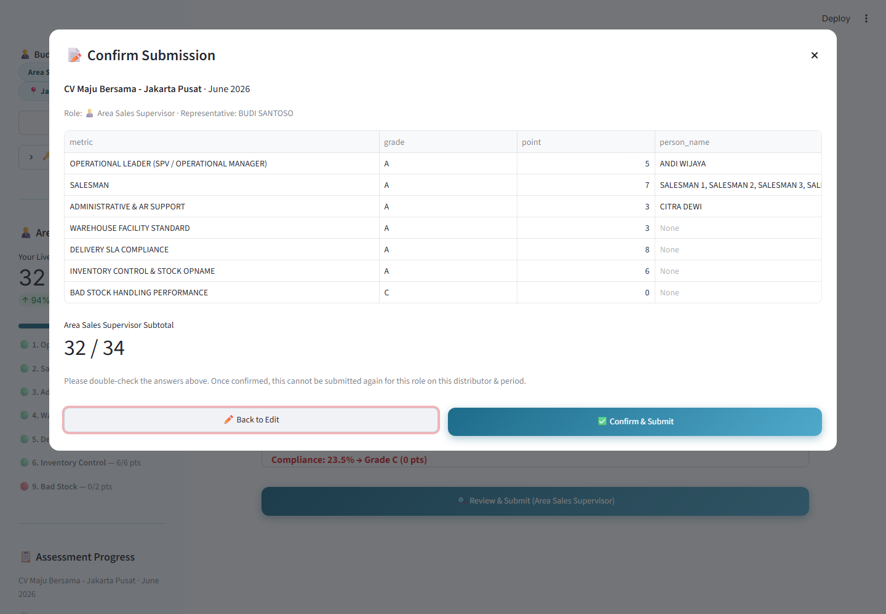
Tujuan: Langkah pengecekan ulang wajib sebelum data tersimpan.
Tombol: - 🔍 Review & Submit (Area Sales Supervisor) — memvalidasi form (lihat aturan validasi di Bagian 5) dan, jika valid, membuka popup konfirmasi seperti gambar di atas. Tombol ini nonaktif jika Anda sudah pernah submit untuk distributor+periode ini. - Di dalam popup: ✏️ Back to Edit (menutup popup, tidak ada perubahan tersimpan) atau ✅ Confirm & Submit (menyimpan submission)
Yang ditampilkan di popup: Setiap metrik, grade-nya, nilai poin, dan nama orang (jika ada), beserta subtotal Anda dari maksimal 34.
Aturan validasi: - Semua aturan validasi level-field di Bagian 5 dicek terlebih dahulu; error akan ditampilkan dan popup tidak akan terbuka sampai semua diperbaiki. - Satu submission per peran, per distributor, per periode assessment — setelah dikonfirmasi, Anda tidak bisa submit ulang untuk kombinasi yang sama persis. Jika mencoba mengakses kembali, akan muncul banner peringatan dan tombol Review & Submit akan nonaktif.
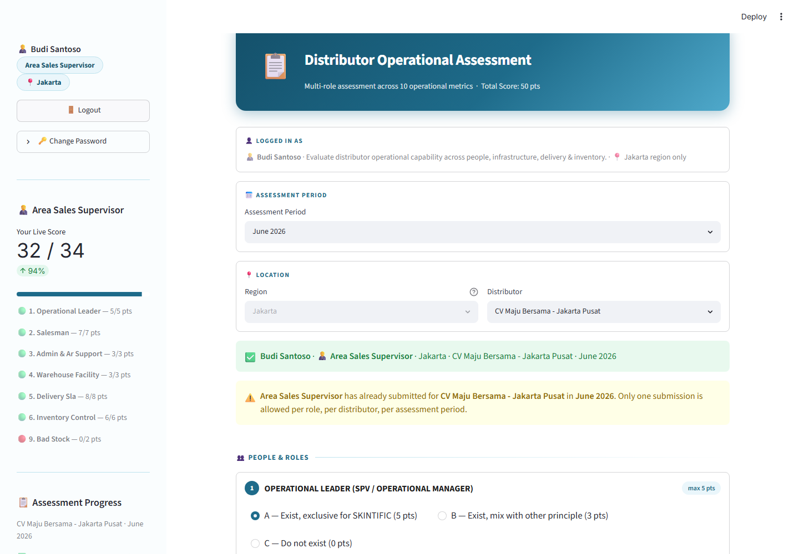
Tujuan: Mengonfirmasi bahwa submission berhasil disimpan, dan — jika keempat peran sudah submit bagian masing-masing — menampilkan skor gabungan akhir dan rating (Excellent/Good/Fair/Needs Improvement) untuk distributor+periode tersebut.
Jika Anda kembali ke distributor+periode yang sudah pernah disubmit: banner kuning akan muncul bertuliskan "[Role] has already submitted for [Distributor] in [Period]. Only one submission is allowed per role, per distributor, per assessment period." — ini adalah aturan satu submission yang sama dari Bagian 8, ditampilkan kembali saat Anda mengunjungi ulang.
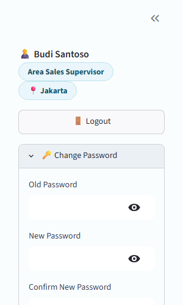
Tujuan: Penggantian password secara mandiri (self-service), tersedia untuk semua peran (bukan hanya Area Sales Supervisor).
Kolom isian: Old Password, New Password, Confirm New Password (semuanya tersembunyi/masked, dengan ikon mata untuk menampilkan/menyembunyikan).
Tombol: Update Password — memvalidasi dan menerapkan perubahan.
Aturan validasi: - Ketiga kolom wajib diisi. - Old Password harus cocok persis dengan password Anda saat ini. - New Password dan Confirm New Password harus sama. - Tidak ada aturan kompleksitas password (panjang minimal, karakter khusus, dll) yang diterapkan. - Jika berhasil, Anda akan langsung logout dan harus login kembali dengan password baru — ini disengaja, bukan bug.
T: Saya tidak menemukan distributor yang seharusnya saya lihat. J: Daftar distributor Anda difilter hanya menampilkan distributor yang ditugaskan ke Anda. Jika ada yang hilang, hubungi Admin untuk mengecek mapping-nya.
T: Kartu Bad Stock tiba-tiba hilang — apakah ini bug? J: Tidak. Kartu ini hanya hilang ketika distributor memiliki YTD sell through nol (Skintific + Timephoria) untuk tahun yang dipilih — tidak ada data untuk menghitung compliance, sehingga metrik ini otomatis diberi nilai penuh dan input-nya disembunyikan.
T: Saya salah input setelah konfirmasi — bisa diperbaiki? J: Tidak. Submission bersifat final per peran/distributor/periode. Hubungi Admin jika memang perlu koreksi.
T: Mengapa sidebar menampilkan progress peran lain? J: Keempat peran digabung menjadi satu assessment per distributor+periode — sidebar memungkinkan Anda melihat keseluruhan gambaran, bukan hanya bagian Anda sendiri.
| Gejala | Kemungkinan Sebab | Solusi |
|---|---|---|
| "Invalid username or password" | Salah ketik, atau akun salah | Cek kembali kredensial; username tidak case-sensitive tapi password case-sensitive |
| Dropdown distributor kosong | Tidak ada distributor yang ditugaskan ke akun Anda | Hubungi Admin |
| Tombol Review & Submit nonaktif/abu-abu | Sudah pernah submit untuk distributor+periode ini | Pilih distributor atau periode lain, atau hubungi Admin untuk koreksi |
| Kartu Bad Stock hilang | YTD sell through nol untuk distributor/tahun tersebut | Perilaku normal, bukan error — lihat FAQ |
| Logout tiba-tiba | Anda baru saja mengganti password | Login kembali dengan password baru |